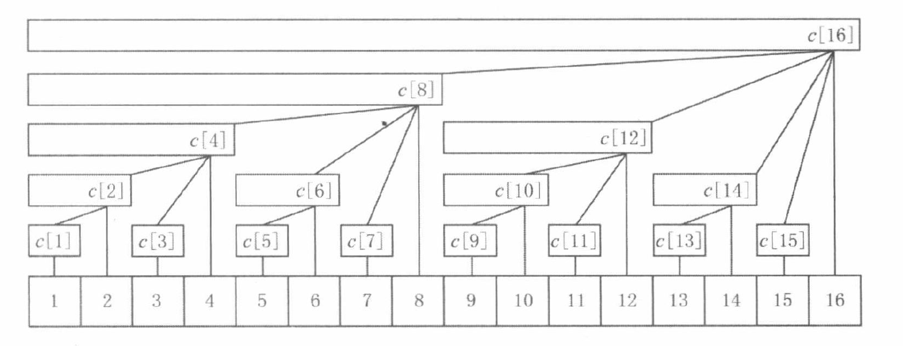
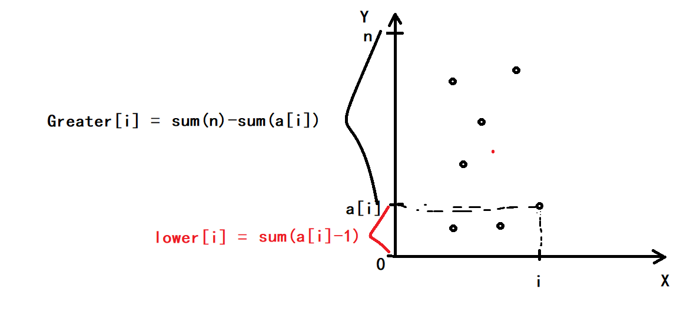

楼兰图腾
原题链接
题目描述
在完成了分配任务之后，西部 314 来到了楼兰古城的西部。
相传很久以前这片土地上(比楼兰古城还早)生活着两个部落，一个部落崇拜尖刀(V)，一个部落崇拜铁锹(∧)，他们分别用 V 和 ∧ 的形状来代表各自部落的图腾。
西部 314 在楼兰古城的下面发现了一幅巨大的壁画，壁画上被标记出了 $n$ 个点，经测量发现这 $n$ 个点的水平位置和竖直位置是两两不同的。
西部 314 认为这幅壁画所包含的信息与这 $n$ 个点的相对位置有关，因此不妨设坐标分别为 $(1,y_1),(2,y_2),\ldots,(n,y_n)$，其中 $y_1\sim y_n$ 是 $1$ 到 $n$ 的一个排列。
西部 314 打算研究这幅壁画中包含着多少个图腾。
如果三个点 $(i,y_i),(j,y_j),(k,y_k)$ 满足 $1\leq i<j<k\leq n$ 且 $y_i>y_j,y_j<y_k$，则称这三个点构成 V 图腾;
如果三个点 $(i,y_i),(j,y_j),(k,y_k)$ 满足 $1\leq i<j<k\leq n$ 且 $y_i<y_j,y_j>y_k$，则称这三个点构成 ∧ 图腾;
西部 314 想知道，这 $n$ 个点中两个部落图腾的数目。
因此，你需要编写一个程序来求出 V 的个数和 ∧ 的个数。
输入格式
第一行一个数 $n$。
第二行是 $n$ 个数，分别代表 $y_1, y_2,\ldots,y_n$。
输出格式
两个数，中间用空格隔开，依次为 V 的个数和 ∧ 的个数。
数据范围
对于所有数据，$n\leq 200000$，且输出答案不会超过 int64。
$y_1\sim y_n$ 是 $1$ 到 $n$ 的一个排列。
输入样例
1 | |
输出样例
1 | |
前置知识
树状数组模板
适用场景：
-
快速求前缀和
-
单点增加，同时正确维护序列的前缀和
以上每步操作均为 $O(\log n)$
仅用数组维护前缀和，在预处理时复杂度为 $O(n)$，修改某一个数的复杂度为 $O(1)$。
维护一个前缀和数组，修改一个数的复杂度为 $O(n)$，而查询某一个数的复杂度为 $O(1)$。
树状数组可以均衡以上操作的复杂度，使两种操作都变成 $O(\log n)$。
算法原理
任意正整数，关于2都有不重复次幂的唯一分解性质，若一个正整数 $x$ 的二进制表示为 $a_{k-1}a_{k-2}\cdots a_2a_0$，其中等于1的位是 $\lbrace a_{i_1},a_{i_2}, \cdots, a_{i_m} \rbrace$，则正整数 $x$ 可以被二进制分解成：
$$
x = 2^{i_1} + 2^{i_2} + \cdots + 2^{i_m}
$$
不妨设 $i_1 > i_2 > \cdots > i_m$，进一步地，区间 $[1, x]$ 可以分成 $O(\log x)$ 个小区间：
1.长度为 $2^{i_1}$ 的小区间 $[1, 2^{i_1}]$
2.长度为 $2^{i_2}$ 的小区间 $[2^{i_1} + 1, 2^{i_1} + 2^{i_2}]$
3.长度为 $2^{i_3}$ 的小区间 $[2^{i_1} + 2^{i_2} + 1, 2^{i_1} + 2^{i_2} + 2^{i_3}]$
……
m. 长度为 $2^{i_m}$ 的小区间 $[2^{i_1} + 2^{i_2} + \cdots + 2^{i_{m-1}} + 1, 2^{i_1} + 2^{i_2} + \cdots + 2^{i_m}]$
这些小区间的共同点就是，若区间结尾为 $R$，则区间长度就等于 $R$ 的二进制分解下的最小的2次幂，即 $\text{lowbit}[R]$。例如 $x = 7 = 2^2 + 2^1 + 2^0$，区间 $[1, 7]$ 可以分成 $[1, 4]$、$[5, 6]$ 和 $[7, 7]$ 三个小区间，长度分别为 $\text{lowbit}(4) = 4$、$\text{lowbit}(6) = 2$ 和 $\text{lowbit}(7) = 1$
给定一个整数 $x$，我们可以利用 $\text{lowbit}$ 运算，来计算出区间 $[1, x]$ 分成的 $O(\log x)$ 个小区间：
1 | |
对于给定的序列 $a$（树状数组中，原始序列下标必须从1开始），我们建立一个数组 $c$，其中 $c[x]$ 保存序列 $a$ 的区间 $[x - \text{lowbit}(x) + 1, x]$ 中所有数的和，即 $\sum_{i=x-\text{lowbit}(x)+1}^x a[i]$
数组 $c$ 可以看作一个如下图的树形结构，图中最下面一行是 $N$ 个叶节点 $N = 16$，代表数值 $a[1\sim N]$，该结构满足：
- 每个内部节点 $c[x]$ 保存以它为根的子树中所有叶节点的和
- 每个内部节点 $c[x]$ 的子节点个数等于 $\text{lowbit}(x)$ 的位数
- 除树根外，每个内部节点 $c[x]$ 的父节点是 $c[x + \text{lowbit}(x)]$
- 树的深度为 $O(\log N)$
如果 $N$ 不是2的整次幂，那么树状数组就是一个具有相同性质的森林结构。

基本操作
区间查询
查询序列 $a$ 的第 $1\sim x$ 个数的和，按照我们刚刚提出的方法，应该求出 $x$ 的二进制表示中的每一个等于1的位，把 $[1, x]$ 分成 $O(\log N)$ 个小区间，而每个小区间的区间和都已经保存在数组 $c$ 中，所以，把上面代码稍加改写即可在 $O(\log N)$ 的时间内查询前缀和：
1 | |
查询特定区间和 $[l, r]$ 也很简单，只需计算 $\text{query}[r] - \text{query}[l - 1]$。
单点增加
支持给序列中的一个数 $a[x]$ 加上 $y$，同时正确维护序列的前缀和。根据上面给出的树形结构和它的性质，只有节点 $c[x]$ 及其所有祖先节点保存的区间和包含 $a[x]$，而任意一个节点的祖先至多有 $\log N$ 个，我们逐一对它们的 $c$ 值进行更新即可在 $O(\log N)$ 时间内完成单点增加：
1 | |
建树
在执行所有操作之前，我们需要对树状数组进行初始化，针对原始序列 $a$ 构造一个树状数组。为了简便，一般的建树方法是，直接建立一个全为0的数组 $c$，然后对每个位置 $x$ 执行 $\text{add}(x, a[x])$，时间复杂度为 $O(N\log N)$。通常这种办法已经足够：
1 | |
另外有一种更高效的建树方法是，从小到大依次考虑每个节点 $x$，借助 $\text{lowbit}$ 运算扫描它的子节点并求和。若采用这种方法，上面树形结构中的每条边都只会被遍历一次，时间复杂度为 $O(\sum_{k=1}^{\log N} k\dfrac{N}{2^k})$：
1 | |
题目分析
1、先分析 V 形图腾：
$n$ 个点中，每个点都有可能成为该图形的下端点，可以以下端点具体是哪个点来划分集合，假设当前枚举的下端点为 $(x,\ y)$，然后在集合中找出位于 $x$ 左右半边的，且高于点 $(x,\ y)$ 的所有点，由乘法原理可知，满足条件的点数为两边点数之积。
2、∧ 形图腾分析步骤一致。
时间复杂度分析：
当下端点或上端点确定后，左右两边总的点数乘积量级是 $O(n^2)$ 的，而由于端点取值有 $n$ 类，故总的量级 为 $O(n^3)$ 的，而 $n\leq 2\times 10^5$，答案会爆int，故需要long long来存。
代码中，Greater[i] 和 lower[i] 的构造可以参考下图：

完整代码
1 | |